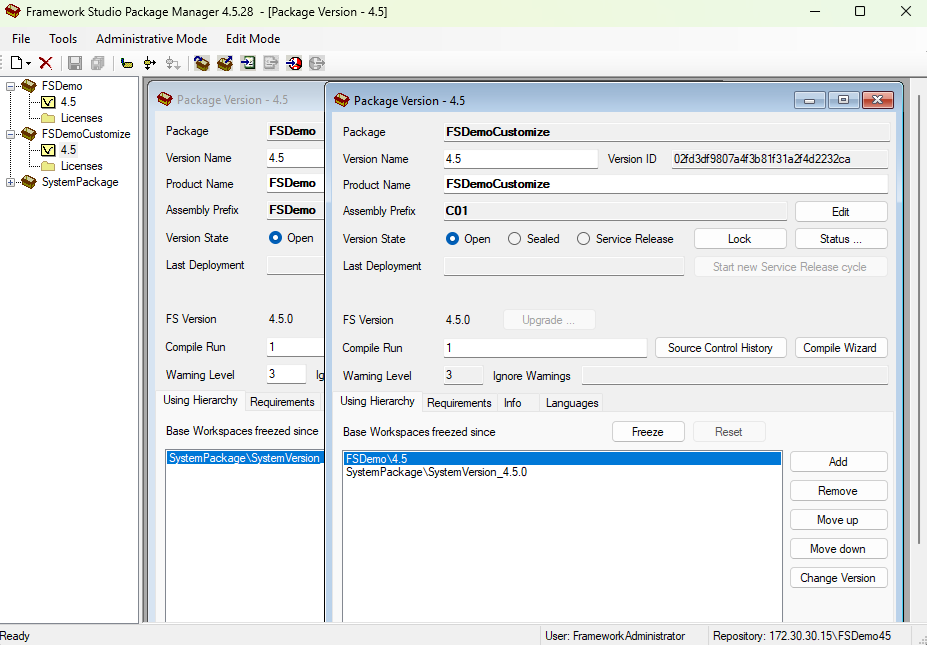

Package Manager
Der Package Manager von Framework Studio ist ein eigenständiges Programm. Mit diesem Tool lassen sich die folgenden Aufgaben rund um Packages erledigen:
- Anlegen, Löschen und Bearbeiten sowie Import und Export von Packages und Package Lizenzen
- Exportieren einer Dokumentation im HTML-Format
- Definition, welche Sprachen eine Anwendung grundsätzlich unterstützen soll
- Fixierung eines Entwicklungsstandes (Versionierung / Labeling)
- Verzweigung von Entwicklungspfaden (Branching)
Folgende Funktionen stehen sowohl im Package Manager als auch in Framework Studio zur Verfügung:
- Runtime License Manager (Laufzeitlizenzen)
- Publish Wizard
- Publish2Go Wizard
- Export Wizard für das HTML-Format
Start des Package Managers
Starten Sie den Package Manager, indem Sie im Programmverzeichnis von Framework Studio die Datei FrameworkStudioPackageManager.exe ausführen.
Es erscheint der Dialog zur Auswahl eines Repositories (analog zum Start von Framework Studio start.
Nach der Repository-Auswahl werden Sie aufgefordert, sich als FrameworkAdministrator anzumelden.
Bedienung des Package Managers
Nach dem Start des Package Managers erscheint das Hauptfenster.

Im Hauptfenster werden über die Toolbar folgende Funktionen angeboten:
New
Sie erkennen New an einem  -Icon.
-Icon.
Anlegen eines neuen Packages, einer neuen Lizenz oder einer neuen Sprache. Um eine neue Sprache anlegen zu können, muss in der Baumstruktur ein Default-Package (also das unterste Package in der Package-Hierarchie einer Anwendung) ausgewählt sein, da Sprachen nur am Default-Package definiert werden. Um neue Lizenzen anlegen zu können, muss man Eigentümer eines Packages sein (Package).
Delete
Sie erkennen Delete an einem  -Icon.
-Icon.
Löschen der in der Baumstruktur ausgewählten Lizenz (Lizenzen), Version (Package-Versionen) oder Sprache (Sprachen). Versionen dürfen nur mit dem Package Manager der aktuellsten Framework Studio Version gelöscht werden, die im Repository zum Einsatz kommt!
Save
Sie erkennen Save an einem  -Icon.
-Icon.
Speichern der Änderungen am ausgewählten Element.
Save All
Sie erkennen Save All an einem  -Icon.
-Icon.
Speichern aller Änderungen.
Label
Sie erkennen Label an einem  -Icon.
-Icon.
Erzeugt eine neue Package-Version auf gleicher Ebene und versiegelt dabei die Ursprungsversion (Status=sealed). Ausgecheckte Elemente werden dabei in die neue Version übertragen.
Beispiel: Label 3.0 => 3.1

Der Status der Ursprungsversion kann anschließend bei Bedarf auf Service-Release oder wieder zurück auf Open gesetzt werden.
Branch
Sie erkennen Branch an einem  -Icon.
-Icon.
Erzeugt eine neue Package-Version eine Ebene tiefer und verändert den Zustand der Ursprungsversion dabei nicht. Ausgecheckte Elemente verbleiben in der Ursprungsversion.
Beispiel Branch 3.0 => 3.0.2

Hotfix Branch
Sie erkennen Hotfix Branch an einem  -Icon.
-Icon.
Legt für die Package-Version einen neuen Hotfix-Branch an.
Beispiel 4.5 => 4.5.hotfix2

Import Package
Sie erkennen Import Package an einem  -Icon.
-Icon.
Importieren einer Package-Version. Nach dem Import ist es in der Regel notwendig, abhängige Package-Versionen zu compilieren bzw. passende Stände von abhängigen Package-Versionen zu importieren.
Export Package
Sie erkennen Export Package an einem  -Icon.
-Icon.
Exportieren der ausgewählten Package-Version.
Import License
Sie erkennen Import License an einem  -Icon.
-Icon.
Importieren einer Package Lizenz (PKL)
Export License
Sie erkennen Export License an einem  -Icon.
-Icon.
Exportieren der ausgewählten Lizenz
Export Service Release
Sie erkennen Export Service Release an einem  -Icon.
-Icon.
Exportiert den Service Release Stand der ausgewählten Package-Version. Dabei werden nur die Änderungen seit dem Eröffnen des Service Release Modus übernommen. Dadurch entstehen deutlich kleinere Dateien als beim normalen Package-Export.
Import Service Release
Sie erkennen Import Service Release an einem  -Icon.
-Icon.
Importiert einen Service Release Stand, welcher zuvor mit Export Service Release exportiert wurde. Durch den Import ändert sich der Compile-Stamp nicht, deshalb müssen die abhängigen Package-Version nicht neu compiliert werden.
Export Documentation
Sie erkennen Export Documentation an einem  -Icon.
-Icon.
Öffnet den Export Wizard, um die Dokumentation der ausgewählten Package-Version im HTML-Format zu exportieren.
Sonstige Tools
Über das Menü Tools / Publish / Wizard bzw. Tools / Publish / 2Go kann der Publish- bzw. der Publish2Go-Wizard für die ausgewählte Package-Version aufgerufen werden.
Über das Menü Tools / Check Using Hierarchies des Hauptmenüs können die Abhängigkeiten der Packages überprüft werden.
Über das Menü Tools / Runtime Licenses Manager kann der Runtime License Manager (Laufzeitlizenzen) für die ausgewählte Package-Version gestartet werden.
In der Baumstruktur des Package Managers werden Packages, Package-Versionen, Lizenzen und Sprachen hierarchisch dargestellt. Die einzelnen Elemente werden im Folgenden genauer beschrieben.
Checkbox "Show only applicable packages and versions"
Mit dieser Checkbox werden die Packages gefiltert. Es werden nur noch die zur Auswahl bereitgestellt, welche passende Versionen zur FS-Version haben, die also im geöffneten PackageManager auch bearbeitet werden können.